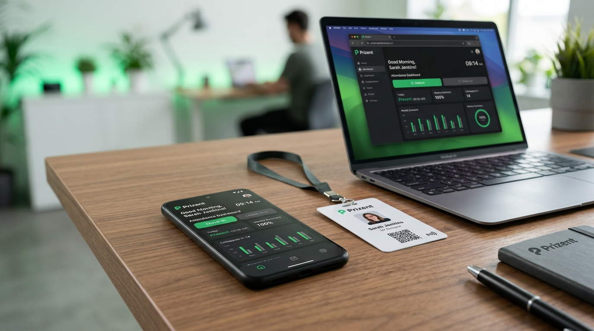

PRIZENT
Système de pointage intelligent par smartphone & badges.


Présentation
Conception du support visuel de promotion et mise en valeur de la solution Prizent, un logiciel de pointage moderne par smartphone et badges destiné aux entreprises, écoles, chantiers BTP et restaurants.
Le Défi
Rendre accessible et immédiatement compréhensible une solution logicielle B2B dans un format publicitaire unique et percutant. Mettre en avant la simplicité d'utilisation sur smartphone, la rigueur du pointage et l'offre tarifaire accessible.
Stratégie Visuelle
Direction artistique axée sur les contrastes forts : fond texturé vert profond rappelant la marque, hiérarchisation stricte des bénéfices clients (entreprises, chantiers, écoles) et mise en scène du mockup smartphone en situation réelle avec interface claire.
Impact & Résultats
Support largement diffusé auprès de cibles décisionnaires au Sénégal. Augmentation notable des demandes de démo et clarté immédiate du positionnement produit sur le marché professionnel sénégalais.